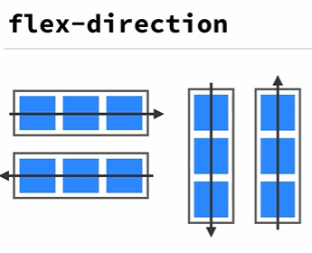
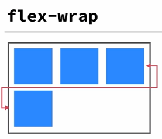
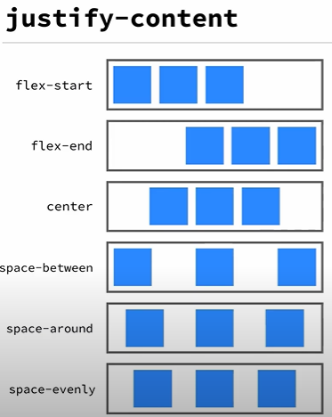
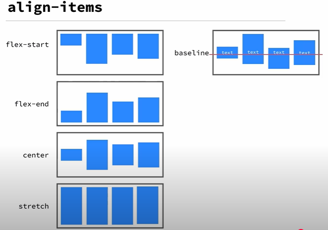
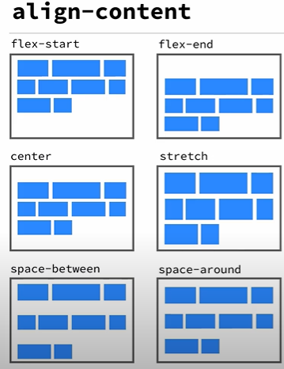
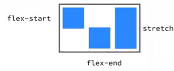

sebelum menggunakan 'display: flex'
- memerlukan clear fix pada code
- memerlukan penulisan code yang sangat panjang
selepas menggunakan 'display: flex'
- tidak memerlukan clear fix
- walaupun tidak ada perbezaan, tetapi ini sangat membantu dalam penulisan code yang simple
info
- harus memeberikan 'display: flex' pada container-2 dahulu (parentnya | pembungkusnya)

- mengatur arah dari urutan elemen2 di dalamnya
- mengatur secara horizontal atau kebalikannya
- mengatur secara vertikal atau kebalikannya
syntax
- .container {flex-direction: row | row-reverse | column | column-reverse;}
menggunakan 'flex-direction: row-reverse'
menggunakan 'flex-direction: column-reverse'
flex-wrap

- secara default, semua items di dalam container akan berada pada satu baris meskupun ukurannya sudah tidak cukup, wrap memungkinkan untuk memindahkan items ke baris di bawahnya
- ketika elemen di dalam container tidak muat, maka ia akan membawa elemen itu kebawah
syntax
- .container {flex-wrap: nowrap | wrap | wrap-reverse}
menambah elemen 5
- membuatkan elemen yang ada dibelkangnya bergeser
- membuatkan ukuran elemen yang awalnya 120px menjadi 112.075px
info: anda boleh ukuran elemen di inspect di '.div container-2'
menggunaakn 'flex-wrap: wrap' bagi menyelesaikan masalah diatas
menggunaakn 'flex-wrap: wrap-reverse' bagi menyelesaikan masalah diatas

syntax
- .container {justify-content: flex-start | flex-end | center | space-between | space-around | space-evenly}
menggunaakn 'justify-content: flex-start'
menggunaakn 'justify-content: flex-end'
menggunaakn 'justify-content: center'
menggunaakn 'justify-content: space-between'
menggunaakn 'justify-content: space-around'
menggunaakn 'justify-content: space-evenly'

- mengatur kesejejaran text di dalam items secara horizontal
syntax
- .container {align-items: flex-start | flex-end | center | stretch | baseline}
menggunaakn 'align-items: flex-start'
menggunaakn 'align-items: flex-end'
menggunaakn 'align-items: center'
menggunaakn 'align-items: stretch'
sebelum 'align-items: baseline'
- tidak sejajar tulisan di dalamnya
selepas 'align-items: baseline'
- sejajar tulisan di dalamnya

syntax
- .container {align-content: flex-start | flex-end | center | space-between | space-around}
definisi
- untuk mengatur jarak antara items terhadap cross axis
- hanya berfungsi ketika items lebih dari satu baris
menggunakan 'align-content: flex-start'
menggunakan 'align-content: center'
menggunakan 'align-content: space-between'
menggunakan 'align-content: flex-end'
menggunakan 'align-content: stretch'
menggunakan 'align-content: space-around'
property pada items
syntax : 'order: number'
property
- order - mengatur urutan dari elemen
menggunakan 'order: 3' pada 'satu'
peringatan
- jika hanya satu item saja yang diberikan order maka ia akan terus ke posisi paling kanan kerana dianggap kosong
- harus memberikan order pada kesemua item
flex-grow
syntax : 'flex-grow: number'
- mengatur ukuran dari si itemnya
menggunakan 'flex-grow: 1' pada item 'dua'
align-self

syntax
- align-self: auto | flex-start | flex-end | center | baseline | stretch
definisi
- mengatur perilaku penjajaran sebuah item yang spesifi terhadap cross axis